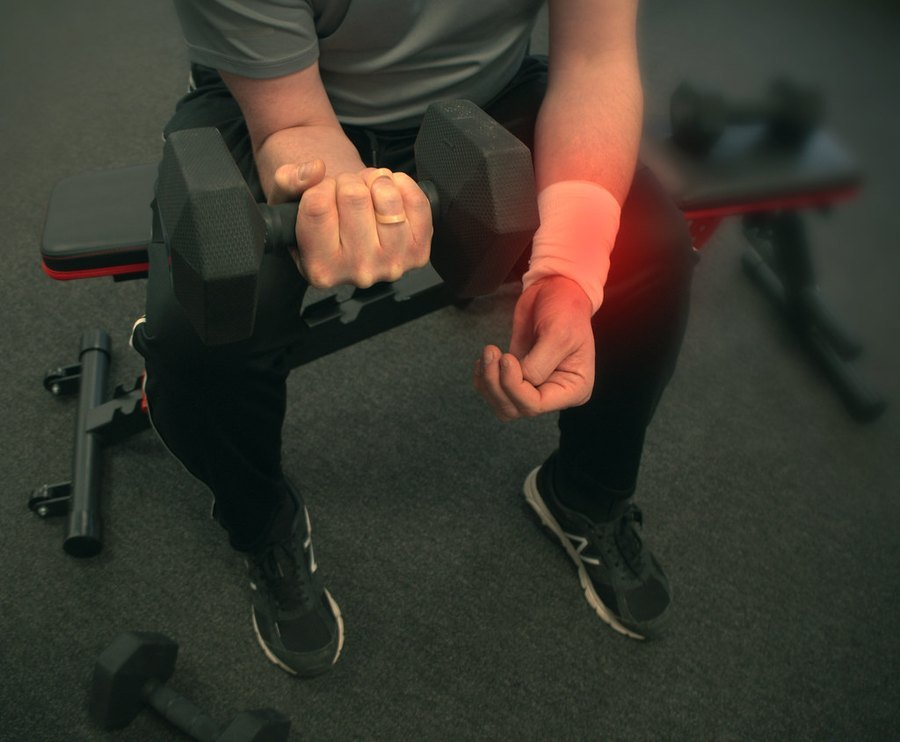
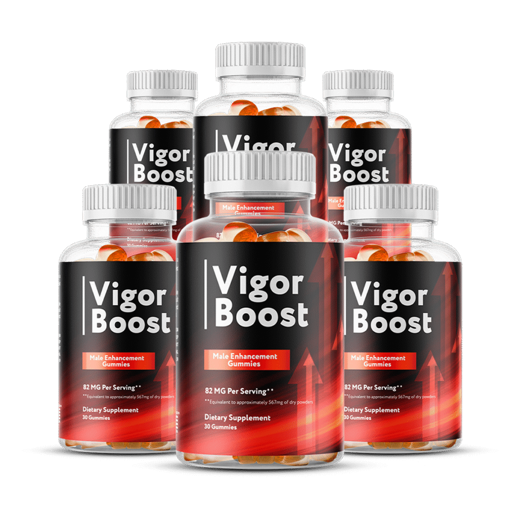
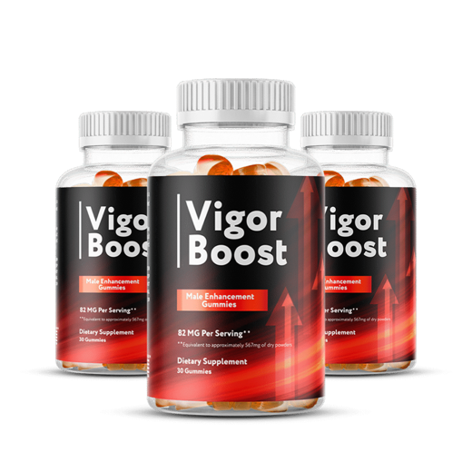
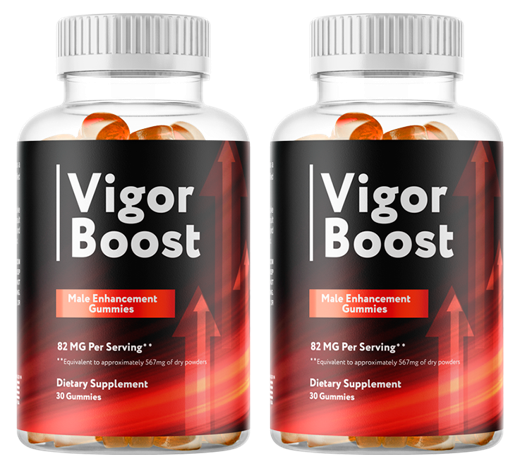

Vigor Boost Results: How Long Until You Notice Anything? A Realistic Timeline
The ads say days. The research on its ingredients says weeks, and sometimes nothing at all. Here's a timeline you can actually plan around.

Key takeaways
- Expect weeks, not days. The ingredient trials behind Vigor Boost's formula, for maca, tribulus and ashwagandha, ran roughly 6 to 12 weeks.
- The only fast-acting ingredient is caffeine, and at 10 mg a gummy it's a light lift, not a jolt.
- The label doesn't disclose per-ingredient amounts. The whole nine-ingredient blend is 82 mg, so nobody can promise the gummy matches study doses.
- Track before you start. A one-week baseline and a weekly 1-to-5 score turn a vague feeling into something you can judge.
- The 60-day guarantee sets your deadline. Start on arrival and make your keep-or-refund call around day 45 to 50.
How long does Vigor Boost take to work? Plan on six to twelve weeks before judging it. That's how long the studies on its main ingredients, maca, tribulus and ashwagandha, typically ran. Caffeine is the only quick-acting part, at a light 10 mg. Some men notice nothing at all, which is why tracking matters inside the 60-day guarantee.
That answer is less exciting than the ads, which tend to talk about results in days. It's also the one the evidence supports. Below we go ingredient by ingredient, show you a simple way to measure what's happening, and explain how to fit a fair trial inside the guarantee window without running out of time.
For the full picture of the formula and our verdict, see our Vigor Boost review. This page is only about timing.

Vigor Boost: check today's price
A once-daily men's vitality gummy with maca, muira puama, tribulus and horny goat weed. Sold only on the official site, with a 60-day money-back guarantee.
See the official price →How long does Vigor Boost take to show results?
Think of it in three phases. The first week, you might notice a slight lift from the caffeine and not much else. Weeks two through six are when daily botanicals, if they're going to do anything for you, would start to show it: steadier energy, better stamina in workouts, a change in interest or mood. Weeks six through twelve are where most of the ingredient research measured its outcomes.
| Phase | What could happen | What to do |
|---|---|---|
| Week 1 | A light caffeine lift, or nothing | Log daily; don't judge yet |
| Weeks 2–4 | Early changes in energy or mood, if any | Keep the routine identical |
| Weeks 5–8 | The window where maca and ashwagandha trials began to show changes | Compare against baseline; decide before day 60 |
| Weeks 9–12 | End of most ingredient study windows | Continue only if your numbers moved |
That's a best-case outline, and it comes with a large caveat. Vigor Boost is an 82 mg proprietary blend of nine ingredients. The label gives the total and the caffeine (10 mg) but not how much of each herb is inside. Most of the trials we mention below used hundreds of milligrams or several grams of a single ingredient. So the timeline tells you when you'd expect to notice something if the gummy works. It can't tell you that it will.
What is the timeline for each Vigor Boost ingredient?
Here's what the research on each ingredient looks like, in terms of time. These figures come from studies of the ingredients on their own, usually at much higher amounts, not from any study of Vigor Boost.
| Ingredient | Typical study length | What was measured | Evidence strength |
|---|---|---|---|
| Caffeine (10 mg stated) | Effects within 30–60 minutes | Alertness, energy | Strong for caffeine itself; 10 mg is a small dose |
| Green tea extract | Hours for caffeine content; weeks for other outcomes | Alertness, general wellness | Moderate for tea; amount here undisclosed |
| Maca | About 6–12 weeks | Sexual desire, mood, energy | A few small trials, mixed but some positive |
| Tribulus terrestris | About 4–12 weeks | Libido, testosterone | Mixed; testosterone mostly unchanged in healthy men |
| Ashwagandha | About 8 weeks | Stress, sleep, in some trials testosterone and strength | Moderate for stress; smaller trials for men's outcomes |
| L-arginine | Weeks, at gram doses | Blood flow | Studied at amounts far above this whole blend |
| Horny goat weed | Little human data | Traditional use for libido | Mostly lab and animal research |
| Muira puama | Little human data | Traditional use for vitality | Very limited clinical research |
| Catuaba | Little human data | Traditional use for energy and libido | Very limited clinical research |

Notice the shape of that table. The ingredients with the most research behind them, maca and ashwagandha, are the slow ones. The quick one, caffeine, is present at a very low amount. And three of the traditional herbs have little or no human trial data, so they don't have a timeline at all.
Why does the 82 mg blend change the Vigor Boost timeline?
Dose and time are linked. In supplement research, a smaller amount of an ingredient generally means a smaller effect, a slower one, or none. That's why the undisclosed split inside Vigor Boost's blend matters for anyone asking how long it takes.
There is one clue on the label. US rules require the ingredients in a proprietary blend to be listed in descending order by weight. Vigor Boost lists caffeine, at 10 mg, sixth of nine. If the label follows that rule, then L-arginine, tribulus and horny goat weed, which come after caffeine, each weigh 10 mg or less. The five ingredients ahead of it, muira puama, ashwagandha, maca, catuaba and green tea extract, share the remaining 72 mg or so between them.
Compare that with the research. Maca trials used grams. Ashwagandha trials commonly used several hundred milligrams. L-arginine was studied in grams. The label's note that 82 mg equals about 567 mg of dry powders suggests concentrated extracts, but it gives no ratios, so the gap can't be closed with arithmetic. The practical takeaway: if you do notice something, the full research window of eight to twelve weeks is the fairest test, and a shorter trial is more likely to miss a small effect.
What results can you realistically expect from Vigor Boost?
Be specific about what you're hoping for, because the honest answer differs by goal.
- Daytime energy. This is the most plausible area to notice something, partly from the caffeine and green tea, partly from ashwagandha's effect on stress and sleep if the amount is meaningful.
- Workout stamina. Possible, and easy to measure if you already train. Watch your usual sessions rather than how you feel.
- Libido or interest. Maca has the best small-trial support here, typically after several weeks. Effects in studies were modest.
- Erection quality. We can't point you to evidence that a supplement like this changes it, and it is not a treatment for erectile dysfunction. If erections have become a problem, a doctor visit is the right next step, not a longer bottle count.
A useful reality check: in placebo-controlled trials of supplements for energy and libido, the placebo group often reports some improvement too. Expectation is powerful. That isn't a knock on you. It's the reason to measure rather than rely on impressions.
How do you track Vigor Boost results properly?
Most people judge a supplement by vibes, and vibes are easily swayed by one good week or one bad night's sleep. A simple log fixes that. It takes about a minute a week.
Start with a baseline. For the seven days before your first gummy, rate the following on a 1-to-5 scale each evening. Then keep going with the same scale every day you take it, and average each week.
| What to rate (1–5) | What a 1 means | What a 5 means |
|---|---|---|
| Daytime energy | Dragging by mid-afternoon | Steady all day |
| Workout stamina | Cut sessions short | Finished strong, or did more than usual |
| Interest and libido | Little interest | Interest like your better years |
| Mood and stress | On edge, irritable | Calm, even |
| Sleep quality | Broken, unrested | Slept through, woke rested |
Add two plain facts each day: whether you took the gummy, and anything unusual (a late night, alcohol, a missed workout, illness). Those notes stop you from crediting or blaming the supplement for things it didn't do.
At week four and again around week seven, compare your weekly averages to the baseline. A consistent one-point rise in a category you care about is a real signal. Bouncing around the same numbers is a real signal too, just in the other direction.
How does the 60-day guarantee fit the Vigor Boost timeline?
Official orders come with a 60-day money-back guarantee. That's a little shorter than the twelve-week end of the research window, so plan for it rather than discovering it at day 70.
- Day 1: start on the day the bottles arrive, not when you get around to it. Note the delivery date somewhere you'll see it.
- Days 1–7: keep scoring. Your baseline week is already done if you logged before it arrived.
- Day 28: first check against baseline. Expect little; this is just a progress marker.
- Days 45–50: decision point. Compare averages. If nothing meaningful has moved, request the refund now, leaving time for the seller's process.
- Day 60: guarantee window closes. If it's working, carry on into the third month.
Read the current refund terms on the official page when you order, since return steps and timing are set by the seller. Keep the order confirmation and the bottles, including empty ones, until you're sure.
Which Vigor Boost package fits a fair trial?
The math is simple: one gummy a day, 30 gummies a bottle, so one bottle is one month.

2 Bottles · Starter $79/bottle Check Availability → + shipping 6 Bottles · Best Value $49/bottle Claim Discount → Free US Shipping 3 Bottles · Popular $69/bottle Claim Discount → Free US ShippingPrices shown are the manufacturer's published rates at the time of writing and can change without notice.
Two bottles covers exactly the 60-day guarantee window, which makes it the cleanest test for most people. At the price published at the time of writing, that's about $2.63 a day plus shipping. Three bottles takes you to 90 days, past the point where most maca and ashwagandha trials measured results, at about $2.30 a day with free US shipping. Six bottles at about $1.63 a day only makes sense once you already know it's doing something for you. All are one-time charges. Check the official page for current prices.
What can slow down or hide Vigor Boost results?
Energy and libido respond to a lot of things that have nothing to do with a gummy. If any of these change during your trial, they'll swamp whatever the supplement is doing.
- Sleep. Less than about seven hours a night drags down energy and testosterone. Our guide to why deep sleep matters explains what happens overnight.
- Alcohol. Even moderate drinking can dull sexual function and sleep quality.
- Medications. Some antidepressants, blood pressure drugs and others can lower libido. Don't stop them on your own. Ask your doctor whether an alternative exists.
- Stress and workload. A brutal month at work will show up in your scores.
- Activity. Regular movement helps circulation and energy. Our piece on the benefits of daily walking is a good place to start.
When should you see a doctor instead of waiting?
Don't use a supplement trial as a reason to put off a medical visit. See a doctor promptly if any of these apply:
- Erection problems are new, getting worse, or have lasted more than a few weeks. They can be an early sign of heart disease, diabetes or low testosterone, and catching those early matters far more than any supplement.
- Fatigue is heavy, new or comes with weight change, low mood, shortness of breath or excess thirst.
- You notice chest pain, a racing or irregular heartbeat, or dizziness after starting the gummy.
- Low libido comes with other signs of low testosterone, such as loss of muscle, low mood or poor concentration. Our article on low testosterone in men describes them.
A doctor can run simple blood tests for blood sugar, cholesterol and testosterone and check your blood pressure. Those answers are worth more than a third bottle. For more reading on these topics, our men's health section collects them in one place.
Bottom line on Vigor Boost results
Give it six to eight weeks at one gummy a day, measured against a baseline, before you decide. If your scores move in a way you'd pay for, keep going. If they don't, use the guarantee. Either way, you'll have an answer based on your own data instead of an ad's promise.
One last point on expectations. A realistic win from a product like this is a small, steady change: a little more energy in the afternoon, an easier time getting through workouts, a bit more interest. If you're hoping for something dramatic, especially around erections, the gummy is the wrong tool and a conversation with your doctor is the right one. Prescription options exist, they're well studied, and the checkup that comes with them may catch something worth treating.
Vigor Boost: check today's price
A once-daily men's vitality gummy with maca, muira puama, tribulus and horny goat weed. Sold only on the official site, with a 60-day money-back guarantee.
See the official price →Frequently asked questions
Will I feel Vigor Boost on the first day?
Possibly a slight lift from its 10 mg of caffeine, which is much less than a cup of coffee. The herbal ingredients aren't expected to do anything noticeable on day one. Judge it after several weeks, not several hours.
Does Vigor Boost work faster if I take two gummies?
There's no evidence it does, and the label dose is one gummy a day. Two gummies doubles the caffeine and sugar and halves how long the bottle lasts, without any proof of faster or bigger results.
Do Vigor Boost results last after I stop taking it?
Nobody has studied that for this product. In general, effects from daily botanicals fade after you stop, usually over days to weeks. If you stop and feel no different, that tells you something useful too.
Why do some men see results and others don't?
Baseline matters. A man who is stressed, sleeping badly and inactive has more room to change than one who already sleeps well and exercises. Placebo effects, other lifestyle changes and differences in how people respond to each herb also play a part.
Is it normal to feel nothing after a month?
Yes. Most of the ingredient research measured outcomes at six to twelve weeks, so a month is early. Keep tracking until your decision point around day 45 to 50, then decide.
Can I take Vigor Boost only on days I work out?
You can, but it isn't how the ingredients were studied. Maca and ashwagandha were tested as daily supplements over weeks. Taking it occasionally makes any effect harder to see and harder to judge.
Should I get my testosterone checked before starting?
If you have symptoms of low testosterone, such as low libido together with fatigue, low mood or muscle loss, yes. A blood test gives you a real baseline and can uncover a treatable cause that no supplement will fix.
Give it a fair, measured trial
Two bottles cover the full 60-day guarantee window at one gummy a day. See the current Vigor Boost packages on the official site.
See Vigor Boost's official price →Related: Vigor Boost review · Does Vigor Boost work? · How to take Vigor Boost · Low testosterone in men · Sleep and memory
Image: our30 / Openverse (Flickr) / CC BY 2.0